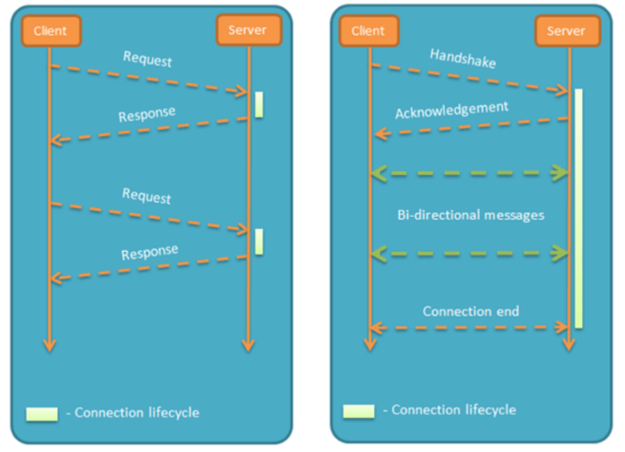
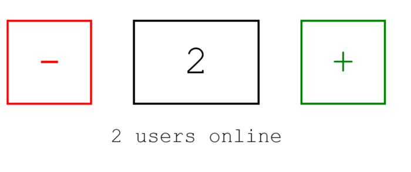

Python之Websocket介紹與實作
這幾天學了一些Websocket的知識，發現網路上中文文檔非常少，就來分享一下學習心得
- Websocket是應用層協議，服務器可以主動向客戶端推送信息，客戶端也可以主動向服務器發送信息，是真正的雙向平等對話(全雙工)
- http是client去request server，然後server return response，HTTP通信只能由客戶端發起(輪巡) 輪詢的效率低，非常浪費資源（因為必須不停連接，或者HTTP 連接始終打開）

- 是應用層的協議，建立在TCP協議上，握手時採用HTTP，只要握手一次就好
- 和AJAX不同，AJAX是為了達到"推送"技術 而不斷的輪巡，這種傳統的模式帶來很明顯的缺點，即瀏覽器需要不斷的向服務器發出請求，然而HTTP請求可能包含較長的header，其中真正有效的數據可能只是很小的一部分，顯然這樣會浪費很多的帶寬等資源。
- HTML5 定義的WebSocket 協議，數據格式比較輕量，開銷小，能更好的節省服務器資源和帶寬，並且能夠更實時地進行通訊。
- 關於AJAX和Websocket的比較 可以看這篇
接下來就是實作了，python要實作websocket的話，可以使用websockets 這個函式庫，這個library比較多人用，文檔也很詳細容易上手，不過django和flask應該都有對應的lib，這大家需要再研究吧
備註：接下來會用到異步asyncio的概念，若不熟的可能要去看我寫的這篇 或者real-python上也寫得很好，主要大概就是async def, await, coroutine這些用法要熟就可以實作websocket了
記得先pip install websockets (然後python版本我用的是3.7，至少需大於3.5，否則不支持asyncio)
client.py
import asyncio
import websockets
async def hello(uri):
async with websockets.connect(uri) as websocket:
await websocket.send("Jimmy")
print(f"(client) send to server: Jimmy")
name = await websocket.recv()
print(f"(client) recv from server {name}")
asyncio.get_event_loop().run_until_complete(
hello('ws://localhost:8765'))
server.py (先打開這個，再打開client.py)
import asyncio
import websockets
async def echo(websocket, path):
print('echo')
async for message in websocket:
print(message,'received from client')
greeting = f"Hello {message}!"
await websocket.send(greeting)
print(f"> {greeting}")
asyncio.get_event_loop().run_until_complete(
websockets.serve(echo, 'localhost', 8765))
asyncio.get_event_loop().run_forever()
整個流程大概是一開始server用websockets.serve註冊一個websocket sever，並將handler指定給echo，(echo這個function--> It must be a coroutine accepting two arguments: a **WebSocketServerProtocol** and the request URI.)
直接看api文檔可以瞭解參數為何https://websockets.readthedocs.io/en/stable/api.html
client這邊一打開就會連至ws，然後發送字串，server收到後就會echo回去，client收完後，就會關閉client

實作html5(client)與python(server)之多人記數器
實作code就在這裡 ，裡面的Synchronization example 我稍微解說一下
start_server = websockets.serve(counter, “localhost”, 6789)註冊了counter當作handler，所以每次進來的訊息都會到counter Global中用了USERS( set 用來計算多少用戶同時在線上) 和STATE(計算計數) 每次進來都會register(websocket)，而try的finally就會unregister(websocket) (這邊就是用來統計使用者個數，當使用者個數產生變動，就會notify_users，[user.send(message) for user in USERS]的方式廣播變動
而計數也是一樣，操作加減js控件時，會透過ws去send json format async for message in websocket: data = json.loads(message) 這段就是負責接收加減數字的訊號
簡單來說 counter當作handler，連線進來時增加使用者個數，並監控使用者前端操作js發出來的websocket訊息(json)，而這些異動都存在global的 USERS和STATE，異動後我就會根據目前使用者數量去notify_state & notify_users 這段就是websocket的重點，Server主動推送訊息

更進一步：基於websocket的聊天室
接下來有興趣的就可以去實作聊天室了(下面連結提供大陸網友實作的code) python websockets 網絡聊天室V0
解說一下，其實後端的邏輯十分簡單，會根據chat 這個main function去分不同的訊息處理(switch case 像是有人發訊息，有人login，logout，然後再把msg群發給所有User) 而前端接收到訊息後再呈現
其他像是Flask等等也有內建flask-sockets的函式庫，有興趣的再自己研究吧 https://github.com/heroku-examples/python-websockets-chat
連續發送 websocket_server.py
import asyncio
import websockets
async def echo(websocket, path):
print('echo')
i = 0
while True:
i += 1
greeting = f"Hello {i}!"
await websocket.send(greeting)
print(f"> {greeting}")
await asyncio.sleep(1)
asyncio.get_event_loop().run_until_complete(
websockets.serve(echo, 'localhost', 8765))
asyncio.get_event_loop().run_forever()
websocket_client.py 使用 websocket.WebSocketApp
import threading
import time
import websocket
import queue
import rel
class ClientSocket:
def __init__(self):
websocket.enableTrace(True)
self.ws = websocket.WebSocketApp(
"ws://localhost:8765/",
# "wss://api.gemini.com/v1/marketdata/BTCUSD",
on_open=self.on_open,
on_message=self.on_message,
on_error=self.on_error,
on_close=self.on_close,
)
# ping_interval 表示發送心跳訊息的間隔，預設為 0，表示不發送心跳訊息；
# 而 ping_timeout 表示伺服器端的回應時間限制，預設為 20 秒。
# 如果伺服器端在 ping_timeout 時間內沒有回應心跳訊息，則客戶端會認為伺服器端已經斷線，並關閉 WebSocket 連線。
self.ws.run_forever(
dispatcher=rel,
ping_interval=10, # 發送心跳訊息的間隔為 10 秒
ping_timeout=5, # 設定伺服器端的回應時間限制為 5 秒
)
rel.signal(2, rel.abort) # Keyboard Interrupt
rel.dispatch()
def on_message(self, ws, message):
print(message)
def on_error(self, ws, error):
print(error)
def on_close(self, ws, close_status_code, close_msg):
print("### closed ###")
rel.abort()
self.ws.run_forever(dispatcher=rel)
rel.signal(2, rel.abort)
rel.dispatch()
def on_open(self, ws):
print("Opened connection")
if __name__ == "__main__":
client_socket = ClientSocket()